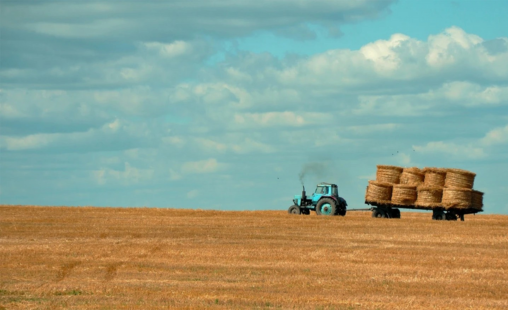

In the face of escalating global challenges posed by climate change, our project aims to tackle one of the most pressing issues of our time: greenhouse gas (GHG) emissions. With the increasing recognition of the critical role data plays in formulating effective strategies, our proposal seeks to leverage the power of data analytics to provide comprehensive insights into GHG emissions worldwide.
Our project centers around harnessing the vast potential of the Climate TRACE dataset, a groundbreaking resource that combines satellite imagery, remote sensing, and AI to offer a detailed inventory of GHG emissions across more than 350 million sources globally. By delving into this wealth of data, our goal is twofold: to analyze historical trends in GHG emissions and to forecast future trajectories across key sectors and regions. Through meticulous data analysis, our project will not only shed light on current emission levels but also provide actionable insights that can inform decision-making at every level. From policymakers shaping environmental regulations to businesses seeking to reduce their carbon footprint, our findings will offer invaluable guidance for mitigating GHG emissions and advancing climate action efforts.
The dataset includes emissions from over 350 million individual sources worldwide, encompassing facilities, transportation networks, agricultural areas, and natural landscapes. It covers a diverse range of sectors such as energy production, manufacturing, transportation, agriculture, and forestry. The data spans from 2015 to the present, with annual updates to monitor changes and trends over time.
The dataset from Climate TRACE includes comprehensive data on greenhouse gas emissions globally. This data is derived from satellite observations, machine learning, and sensor networks, providing high-resolution and near-real-time information on emissions from various sources. The dataset covers a wide range of sectors including energy production, transportation, industry, agriculture, and more. It is designed to be detailed and accurate, making it suitable for in-depth analysis of emission patterns and trends.
The primary objective of this project is to utilize the Climate TRACE dataset to analyze historical trends and generate forecasts of global greenhouse gas (GHG) emissions across key sectors. By leveraging the historical data available from Climate TRACE, this project aims to provide actionable insights into current emission levels and predict future trends. These insights will help identify high-emission sectors, understand their trajectories, and support the development of targeted strategies to mitigate GHG emissions, ultimately contributing to global climate action efforts.

Developing a web platform for GHG emissions data will allow policymakers to create better regulations, businesses to optimize operations, and NGOs to enhance advocacy, requiring investment in data infrastructure and analytics. Accurate budgeting and forecasting are essential for effective resource allocation and financial planning, ensuring the project's viability and adaptability. Both profitability and precise financial management are justified by the benefits of providing stakeholders with actionable emissions insights.